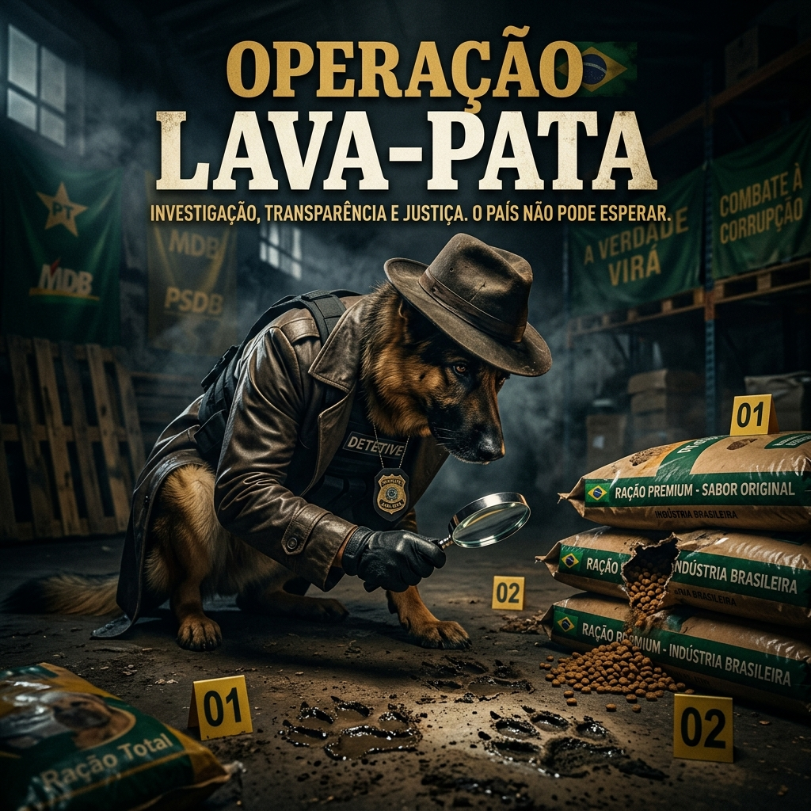

01
Fiscalização
Operação Lava-Pata
Combate ao desvio de ração
Chega de esquemas! Enquanto cachorros honestos passam fome na fila do petshop, rações premium são desviadas para gatos que nem pagam imposto. A Operação Lava-Pata vai farejar cada centavo público e morder quem estiver roubando. Nenhum saco de ração premium será desviado em nosso governo. Criação de uma força-tarefa canina especializada em auditoria de estoque com faro infalível.
R$ 2,7bi
Em ração desviada/ano
847
Investigações ativas
100%
Faro de aprovação